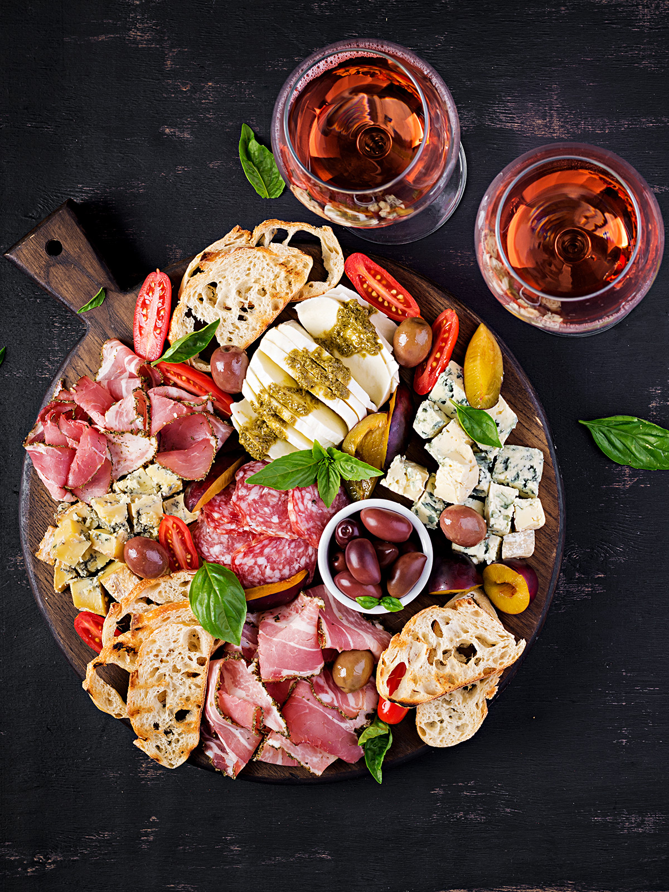

Bastaix
Direkt im Schatten von Santa Maria del Mar, auf dem Platz, der an die Belagerung Barcelonas 1714 erinnert – hier lasst ihr den Tag im Born mit einer großen Tapas-Auswahl ausklingen.

Besonderheiten
Ein etabliertes Tapas-Restaurant mitten im Born, bekannt für seine breite Auswahl an mediterranen Gerichten und eine solide Weinkarte. Die Lage direkt an der Plaça del Fossar de les Moreres, unmittelbar neben Santa Maria del Mar, macht es zum perfekten Schlusspunkt eures Nachmittagsrundgangs durch den Gòtic und Born.
Praktische Hinweise
Adresse: Plaça del Fossar de les Moreres 5, 08003 Barcelona (El Born, direkt neben Santa Maria del Mar). Preisklasse: moderat bis gehoben. Typische Gerichte: breite Tapas-Auswahl mit viel Fleisch und vegetarischen Optionen, gute Weinauswahl. Reservierung: empfehlenswert, besonders abends. Öffnungszeiten: Di–Do 12:30–23:00 Uhr, Fr 12:30–23:30 Uhr (montags geschlossen). Entfernung: ein paar Schritte von Santa Maria del Mar, auf dem direkten Weg zur Sky Bar am Grand Hotel Central.